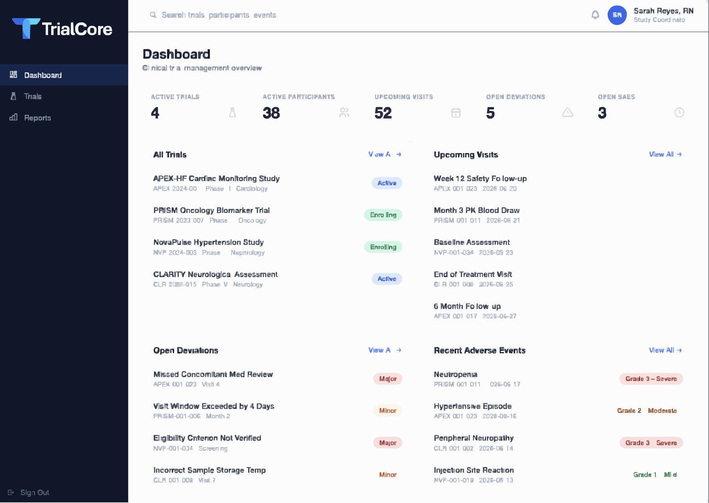

Audit ready
Complete audit trails and status history.
Clinical trial management overview
Trial operations without spreadsheet chaos.
TrialCore is a modern clinical trial management system for clinical research coordinators, research teams, study administrators, supervisors, and auditors. It brings participants, visits, tasks, safety reporting, deviations, protocol versions, reports, and audit logs into one clear workspace.
Coordinator-informed. Operational first. Compliance minded.

Key Features
Trusted by research teams committed to better outcomes.
Participant focused
Manage the full participant lifecycle with clarity.
Protocol aligned
Visits, tasks, and deviations tie back to the protocol.
Secure by design
Role-based access and data protection.
Platform
Multiple trials. Multiple logs. All found in one place.
TrialCore organizes trials, participants, visits, protocol versions, tasks, reports, and audit logs in a shared operational model.
Study records
Trials, participants, visits, protocol versions, screening criteria, tasks, reports, and audit logs live together so study teams can follow the work without added visual noise.
Core Objects
- Trials
- Participants
- Visits
- Tasks
- Reports
- Audit logs
Clinical Workflow
Built around the study rhythm teams follow every day.
Participant status flows, protocol visits, optional visits, visit windows, and automatic assignment all stay connected to the study record.
Participant lifecycle
Identified
Potential participants are captured and tracked from the first touchpoint.
Screening
Eligibility checks and screening activity stay connected to the record.
Enrolled
Confirmed participants move into active study participation.
Accrued
Accrual status stays visible for operational reporting and study review.
Long-Term Follow-Up
Ongoing follow-up remains tied to participant history and study context.
Study Terminal Status
Completion, withdrawal, or other terminal outcomes are captured in one final state.
Protocol visits
- Protocol visits stay tied to the study schedule.
- Optional visits appear alongside required visits.
- Visit windows make timing expectations explicit.
- Automatic assignment reduces manual tracking overhead.
Clinical workflow
The system keeps the operational model calm and traceable, so work moves through the same structure from start to finish.
Tasks, status changes, and visit activity stay in one place so teams can move from planning to execution without losing context.